冲绳面巡礼之旅，这次造访了位在宇流麻市石川的「潮骚面」🍜2025年6月吃的😄
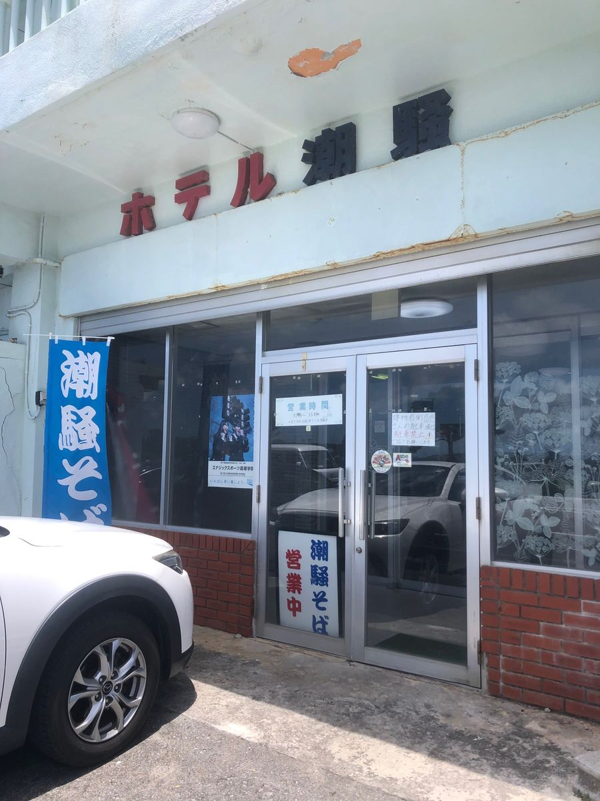
是位在石川海边的「潮骚饭店」1楼的店。建筑物上有「潮骚饭店」的看板，下面立着「潮骚面」的旗帜，冲绳面店与旅馆合为一体，是相当少见的型态😆
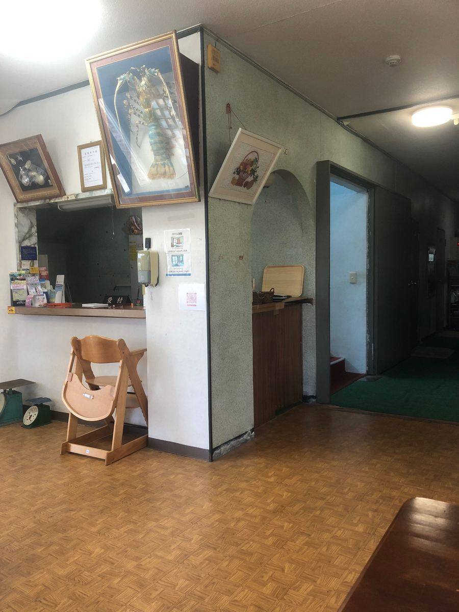
走进去，首先迎接的是像旅馆柜台的接待柜台。明明是来面店，却有种走进旅馆大厅的奇妙感觉呢😊
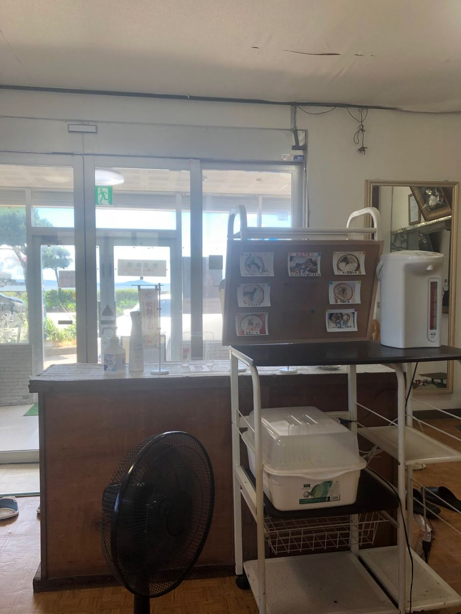
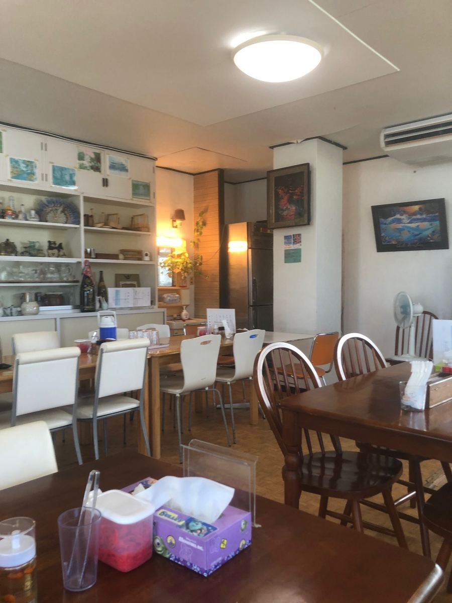
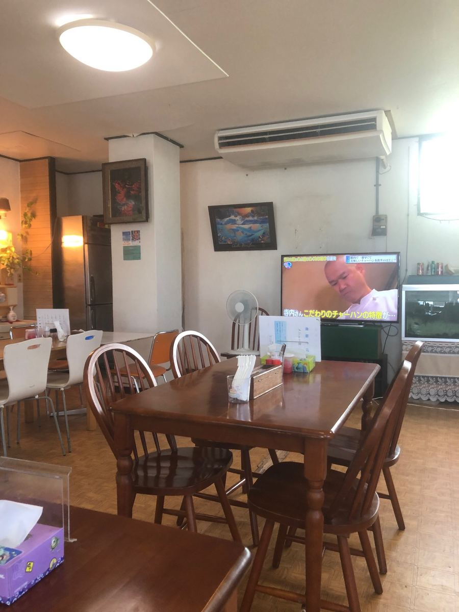
客席是直接把旅馆大厅当成食堂的宽敞格局。我造访时挤满了在地客人。感觉是深受在地人喜爱的店，让人安心。
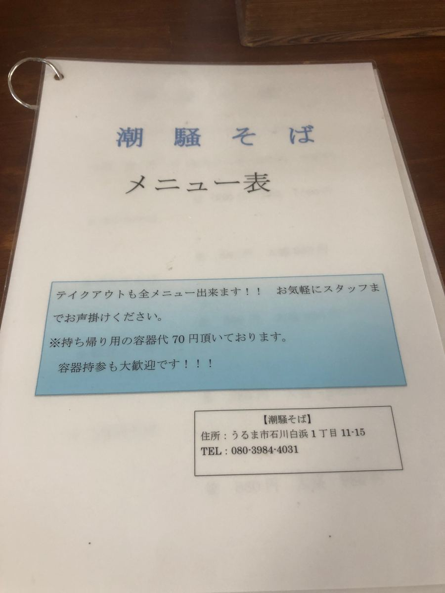
菜单上有「所有菜单都可以外带！！」的告示。自带容器也非常欢迎，感觉得到在地人轻松利用的样子。
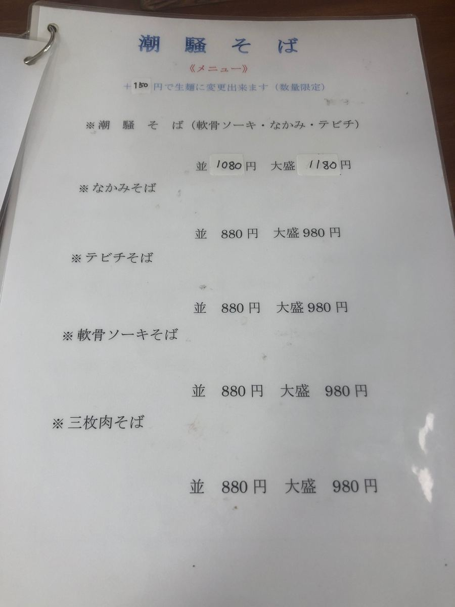
面的菜单在这里。招牌的「潮騒面」是软骨排骨・猪内脏・猪脚全部加料，普通1080日圆，大碗1180日圆。其他还有猪内脏面、猪脚面、软骨排骨面、三层肉面，都是普通880日圆、大碗980日圆的阵容。而且＋150日圆还可以换成生面（限量）🤤
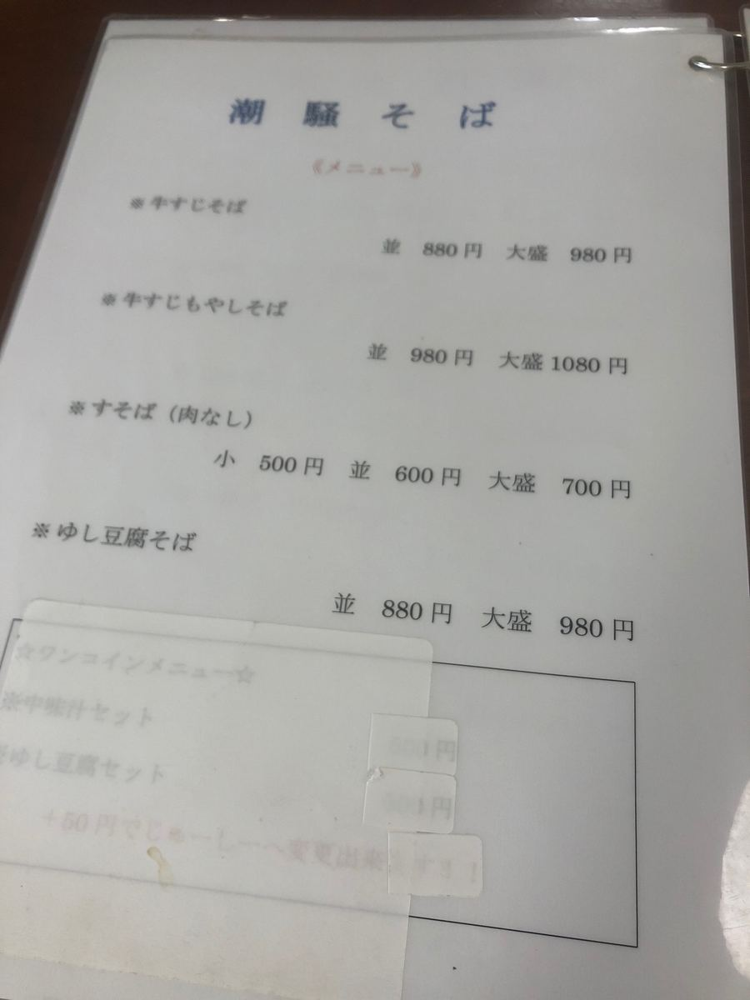
还有牛筋豆芽菜面、不加肉的素面、嫩豆腐面。
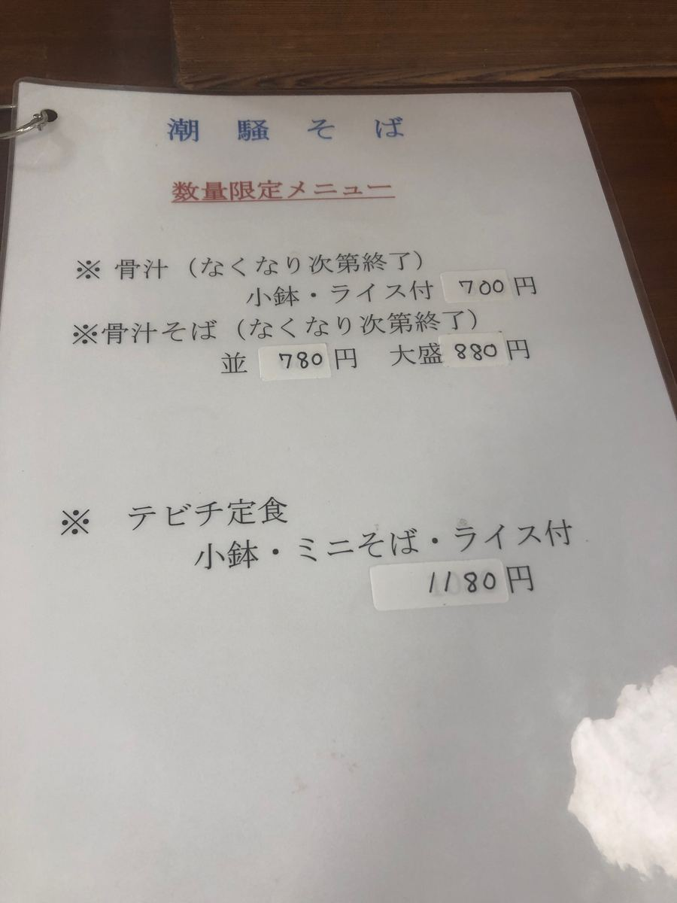
另外让我在意的是限量的「骨汤」。附小菜和白饭700日圆，骨汤面普通780日圆，很划算。据说卖完为止，下次想挑战看看。
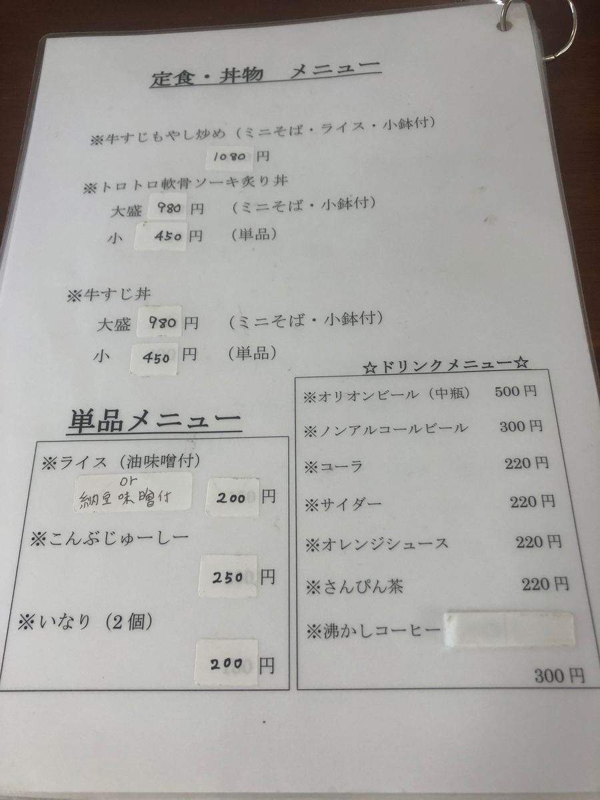
定食、丼饭、单品到饮料都有，身为食堂的涵盖范围也很广呢。
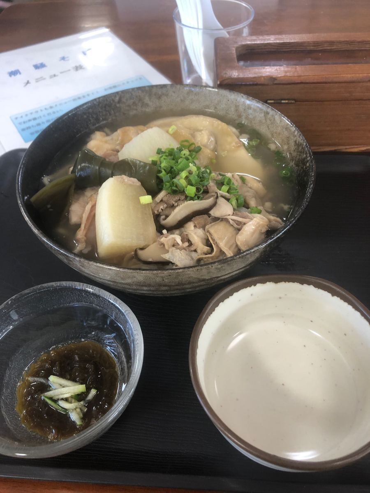
那么，这次点了以店名命名的「潮騒面」大碗。端来的就是这碗。大块的猪脚，两块大块的软骨排骨，猪内脏、结昆布，还有少见的白萝卜，总之是份量十足的一碗✨
先从汤头开始。不知道是不是综合高汤，感觉猪骨十足，但似乎也混入了猪内脏汤的汤汁，老实说是无法断言「就是这个」的复杂味道😋
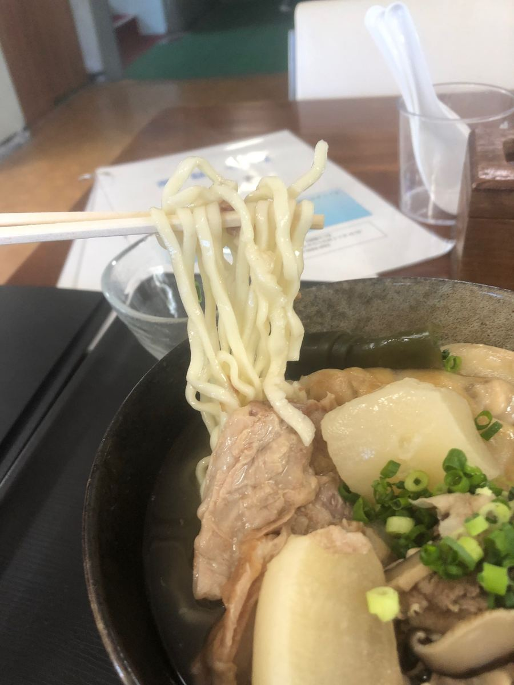
面条是偏细、微卷的类型，煮得偏软。
不过配料真的很惊人。猪脚偏大，软骨排骨有两块大块的，再加上猪内脏和结昆布。在冲绳面里遇到白萝卜相当少见，这是个令人开心的小发现😄 也因为点了大碗，吃完时已经饱到不行。
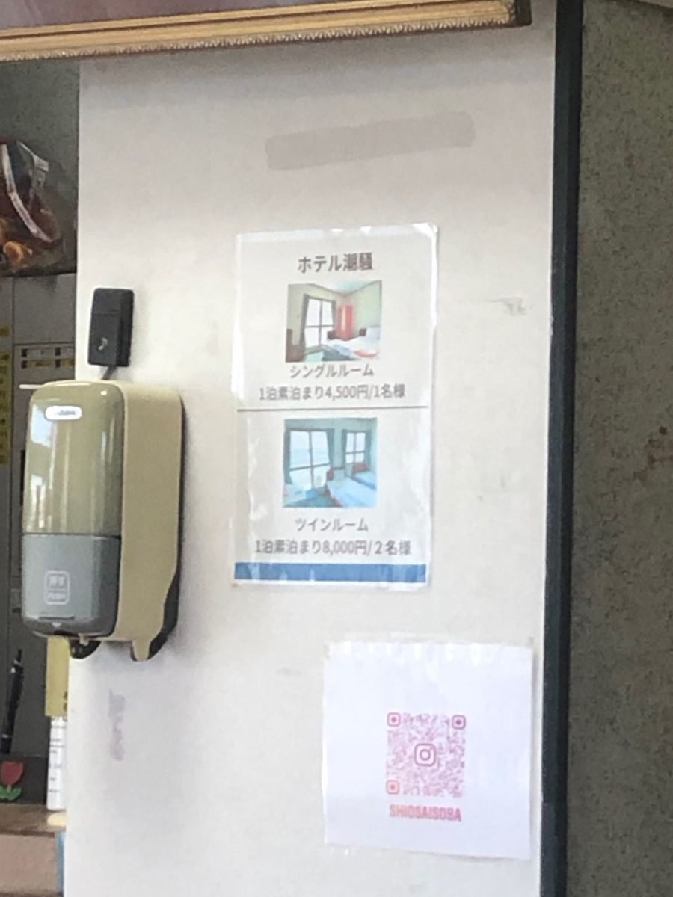
而且如同开头所提，这里是旅馆，所以也可以只住宿不含餐。单人房1晚不含餐4,500日圆，双人房8,000日圆（2位），相当实惠。吃完冲绳面就能直接住下来，仔细想想这可能是相当奢侈的用法呢🍶
评分（9分/15分）：猪骨十足的综合高汤又混入猪内脏汤风味、有点难以捉摸的汤头。面条是偏细的微卷类型，偏软。猪脚・两块软骨排骨・猪内脏・结昆布・白萝卜，配料的份量无可挑剔。味道本身印象是普通，不过难怪挤满在地客人，吃得很有满足感😊
面：★★★☆☆（3）
汤头：★★★☆☆（3）
配料：★★★☆☆（3）